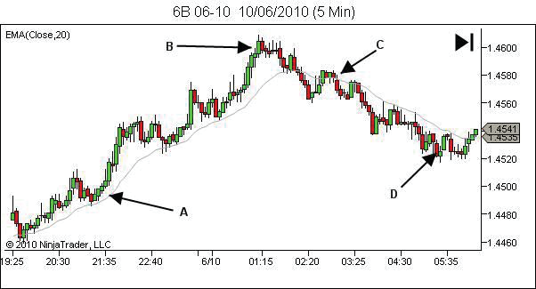

阶段一 · 模块1
上升趋势的完整结构（HH+HL）
核心概念定义
🔺 更高高点（Higher High，HH）
在上升趋势中，当价格突破前一个高点并创出新的高点时，这个新的高点被称为"更高高点"（HH）。
✓ 识别标准：
当前高点 > 前一个高点
突破必须有力，不仅是触及
维持在新高之上
突破必须有力，不仅是触及
维持在新高之上
🔻 更高低点（Higher Low，HL）
在上升趋势中，当价格回调后形成新的低点，且这个低点高于前一个低点时，被称为"更高低点"（HL）。
✓ 识别标准：
当前低点 > 前一个低点
回调应该有序，不是剧烈下跌
在低点附近有支撑迹象
回调应该有序，不是剧烈下跌
在低点附近有支撑迹象
📈 上升趋势公式
一个完整的上升趋势由一系列的HH和HL组成：
💡 核心公式：
HH + HL = 上升趋势信号
HH + HL + HH + HL = 持续的上升趋势
越多连续的HH和HL = 越强的上升趋势
HH + HL + HH + HL = 持续的上升趋势
越多连续的HH和HL = 越强的上升趋势
📊 教学图例（来自PDF）

上升趋势基础结构
展示上升趋势的完整结构，可以清晰看到价格的逐步上升过程。
📖 PDF内容要点：
观察图表中的价格运动，注意每次上升都创出新高，每次回调都形成更高的低点。

高点与低点标注
详细标注了上升趋势中的关键转折点。高点(H)和低点(L)的位置。
📖 PDF内容要点：
注意左侧低点和右侧高点的关系，这就是典型的HH+HL结构。

完整趋势结构图
展示多个HH和HL组合形成的完整上升趋势结构。
📖 PDF内容要点：
价格不断创出更高的高点和更高的低点，形成持续上升的通道。

趋势中的回调
展示上升趋势中的回调过程，回调提供了再次入场的机会。
📖 PDF内容要点：
注意回调不会破坏整体结构，回调低点高于前一低点时可以继续做多。
✏️ 基于图片的互动练习
观察上图，回答问题
练习1：观察上面的"完整趋势结构图"
根据图片，判断以下说法中哪些是正确的：
练习2：观察上面的"高低点标注图"
根据图片标注，判断图中展示了什么结构：
练习3：基于所有图例的综合理解
观察所有4张图例，选择最准确的说法：